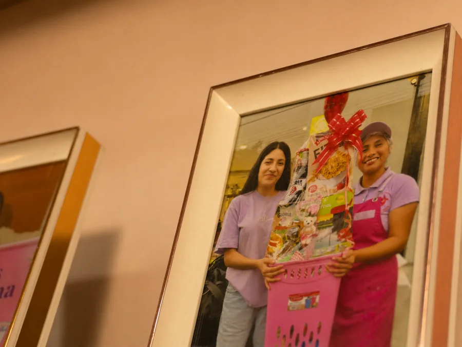
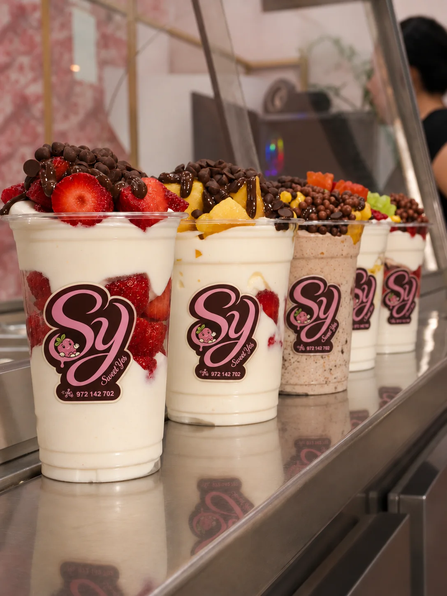
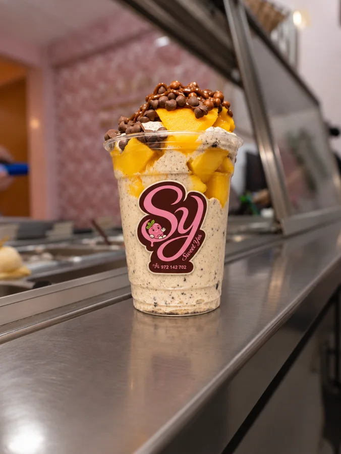
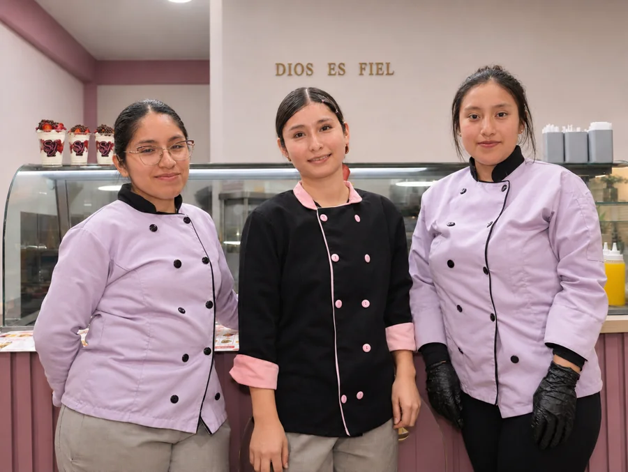
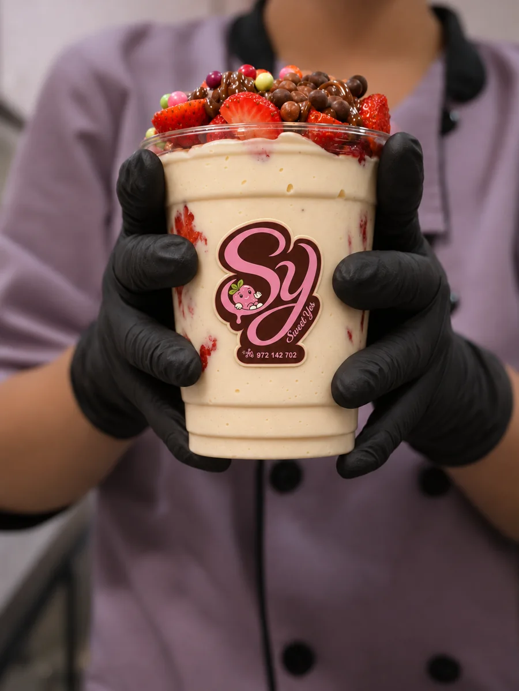
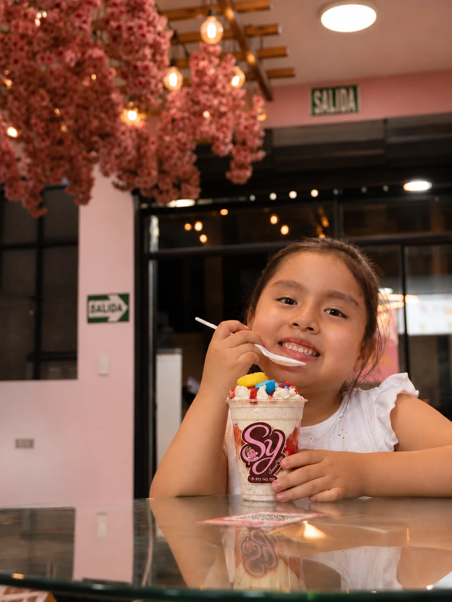
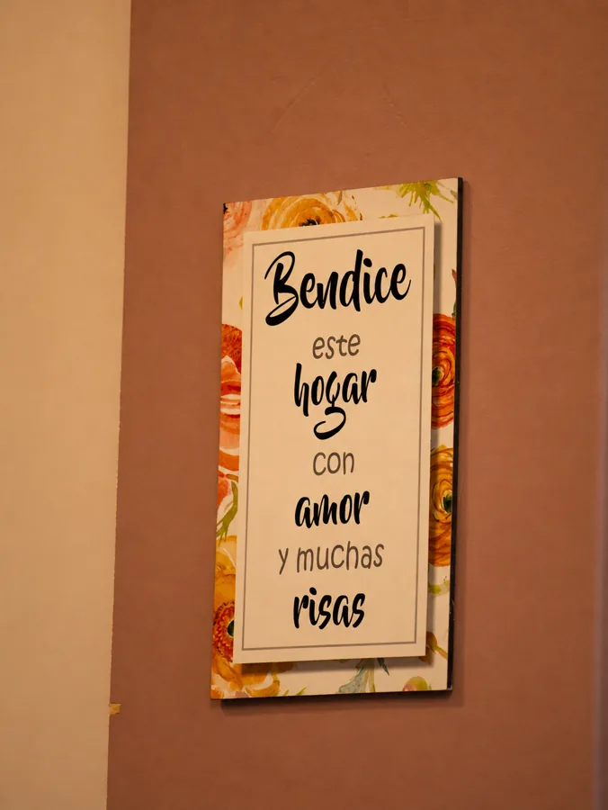

El primer paso.
Un video de Fernanda, una creadora de México, encendió la idea. Después de un mes de dudas, nuestra fundadora dejó su trabajo en administración para aprender a preparar fresas con crema.


Fresas con crema, waffles y minidonas
preparados al momento en Santa Clara.
Nuestra historia empezó con 20 vasos y un acto de fe.
Un video de Fernanda, una creadora de México, encendió la idea. Después de un mes de dudas, nuestra fundadora dejó su trabajo en administración para aprender a preparar fresas con crema.

Una batidora de mano, ingredientes sencillos y 20 amigos de la iglesia que dijeron sí. Después llegó la venta frente a la Universidad César Vallejo: en una hora, los vasos se habían terminado.

Con tropiezos, mucha perseverancia y personas que creyeron en el sueño, Sweet Yes fue creciendo. La fe sigue acompañando cada paso.
«Dios fue fiel».La fundadora de Sweet YesVen a conocernos



Frutas frescas, cremas artesanales y ese toque final que hace tuyo cada vaso. Una cucharada basta para querer volver.
La fe que nos animó a empezar también vive en los pequeños detalles de nuestro local.
Conoce nuestra historia

«atención rápida y agradable, recomiendo ir»
«Tiene una excelente atención y variedad de productos»
«Las mejores fresas con crema!!»
Primero elige el tamaño del vaso y después la jalea: puedes elegir una o marcar «Sin jalea». Luego puedes elegir hasta dos frutas y dos cremas artesanales. Puedes elegir solo una crema o menos ingredientes. En el mediano puedes combinar fresa, mango y plátano; la uva solo se ofrece como fruta única. Un vaso de solo mango o solo uva tiene un adicional de S/ 3. Añadir Nutella cuesta S/ 3 por vaso; estos recargos se suman si eliges ambos. Si no deseas toppings, marca «Sin toppings». El mediano lleva un topping, el grande dos, el maxi tres y el de un litro cuatro. Cada topping adicional cuesta S/ 1.
Revisa tu selección, pulsa «Pedir por WhatsApp» y envía el mensaje. El equipo te confirmará disponibilidad, precio final y cómo recibir tu pedido.
Consulta la cobertura, el costo de envío y el tiempo estimado al ingresar tu dirección en Rappi. Para pedidos directos, consulta por WhatsApp.
Escríbenos antes de pedir e indica el producto y el ingrediente que necesitas evitar. El equipo del local podrá revisar tu consulta.
La selección de productos y las observaciones se preparan en tu navegador. Al abrir WhatsApp se trasladan al mensaje para que lo revises y envíes. Sweet Yes utiliza la información que compartes para atender tu consulta o coordinar tu pedido. Google Maps recibe una solicitud cuando se carga el mapa del local.
Para consultar por tus datos o solicitar su acceso, rectificación, cancelación u oposición, contacta a Sweet Yes.